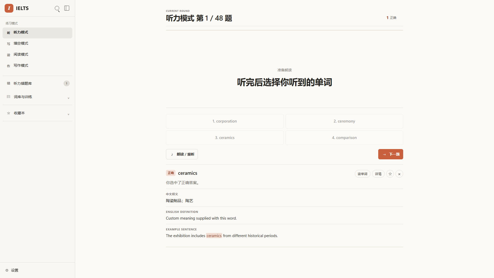

LOCAL-FIRST NLP / LLM RESEARCH PROTOTYPE
Valid JSON is not necessarily a valid learning item.
IELTS Learning Lab combines a complete browser-based practice app with strict schema generation, semantic checks, and a one-repair guardrail. The public demo needs no account and no API key.
Zero-key demo · Browser-local data · No target words sent to a server
RUNNABLE PRODUCT
Start practising in one click
Listening, dictation, reading, writing, favourites, mistake review, browser storage and speech remain available without a model.

SMALL, EXPLAINABLE PIPELINE
Four decisions, each inspectable
- 01GenerateFour fixed learning fields
- 02Check structureStrict JSON Schema
- 03Check meaningEight explicit rules
- 04Repair onceThen fall back locally
EVIDENCE STATUS
Implementation verified. Model comparison not yet run.
Twelve automated tests cover the validator, benchmark selection, repair ceiling, API inputs, no-key fallback, request limits and path safety. The proposed 900-output evaluation remains a preregistered next step.